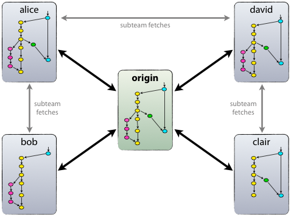
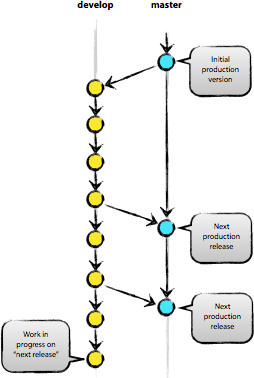

GIT分支管理是一门艺术
Table of Contents
- 1 GIT，在技术层面上，绝对是一个无中心的分布式版本控制系统，但在管理层面上，我建议你保持一个中心版本库。
- 2 我建议，一个中心版本库（我们叫它origin）至少包括两个分支，即“主分支”（master）和“开发分支”（develop）
- 3 要确保：团队成员从主分支（master）获得的都是处于发布状态的代码，而从开发分支（develop）应该总能够获得最新开发进展的代码
- 4 在一个团队开发协作中，我建议，要有“辅助分支”的概念。
- 5 “辅助分支”，大体包括如下几类：“管理功能开发”的分支、“帮助构建可发布代码”的分支、“可以便捷的修复发布版本关键BUG”的分支，等等
- 6 “辅助分支”的最大特点就是“生命周期十分有限”，完成使命后即可被清除。
- 7 我建议至少还应设置三类“辅助分支”，我们称之为“Feature branches”，“Release branches”，“Hotfix branches”。
- 8 至此，我们形成了如下这张最重要的组织组，包含了两个粗体字分支（master/develop）和三个细体字分支（feature/release/hotfixes）。
- 9 “Feature branches”，起源于develop分支，最终也会归于develop分支。
- 10 “Feature branches”常用于开发一个独立的新功能，且其最终的结局必须只有两个，其一是合并入“develop”分支，其二是被抛弃。最典型的“Feature branches”一定是存在于团队开发者那里，而不应该是“中心版本库”中。
- 11 “Feature branches”起源于“develop”分支，实现方法是：
- 12 “Feature branches”最终也归于“develop”分支，实现方式是：
- 13 “Release branch”，起源于 develo 分支，最终归于 “develop” 或 “master” 分支。这类分支建议命名为 “release-*”
- 14 “Release branch” 通常负责 “短期的发布前准备工作”、“小bug的修复工作”、“版本号等元信息的准备工作”。与此同时，“develop”分支又可以承接一下个新功能的的开发工作了。
- 15 “Release branch” 产生新提交的最好时候是 “develop” 分支已经基本到达预期的状态，至少希望新功能已经完全从 “Feature branches” 合并到 “develop” 分支了。
- 16 创建 “Relase branches”，方法是：
- 17 在一段短时间内，在 “Release branches” 上，我们可以继续修复bug。在此阶段，严禁新功能的并入，新功能应该是被合并到 “develop” 分支的。
- 18 经过若干 bug 修复后，“Release branches”上的代码已经达到可发布状态，此时，需要完成三个动作：第一是将 “Release branches” 合并到 “master” 分支，第二是一定要为 master 上的这个新提交打 TAG （记录里程碑），第三是要将 “Release branches” 合并回 “develop” 分支。
- 19 “Hotfix branches” 源于 “master”，归于 “develop” 或 “master”，通常命令为 “hotfox-”
- 20 “Hotfix branches” 类似于 “Release branch”，但产生此分支总是非预期的关键GUG。
- 21 建议设立 “Hotfix branches” 的原因是：希望避免 “develop分支” 新功能的开发必须为BUG修复让路的情况。
- 22 建立 “Hotfix branches”，方法是：
- 23 BUG修复后，需要将 “Hotfix branches” 合并回 “master” 分支，同时也需要合并回 “develop” 分支，方法是：
1 GIT，在技术层面上，绝对是一个无中心的分布式版本控制系统，但在管理层面上，我建议你保持一个中心版本库。

2 我建议，一个中心版本库（我们叫它origin）至少包括两个分支，即“主分支”（master）和“开发分支”（develop）

3 要确保：团队成员从主分支（master）获得的都是处于发布状态的代码，而从开发分支（develop）应该总能够获得最新开发进展的代码
4 在一个团队开发协作中，我建议，要有“辅助分支”的概念。
5 “辅助分支”，大体包括如下几类：“管理功能开发”的分支、“帮助构建可发布代码”的分支、“可以便捷的修复发布版本关键BUG”的分支，等等
6 “辅助分支”的最大特点就是“生命周期十分有限”，完成使命后即可被清除。
7 我建议至少还应设置三类“辅助分支”，我们称之为“Feature branches”，“Release branches”，“Hotfix branches”。
8 至此，我们形成了如下这张最重要的组织组，包含了两个粗体字分支（master/develop）和三个细体字分支（feature/release/hotfixes）。

9 “Feature branches”，起源于develop分支，最终也会归于develop分支。
10 “Feature branches”常用于开发一个独立的新功能，且其最终的结局必须只有两个，其一是合并入“develop”分支，其二是被抛弃。最典型的“Feature branches”一定是存在于团队开发者那里，而不应该是“中心版本库”中。
11 “Feature branches”起源于“develop”分支，实现方法是：
$ git checkout -b myfeature develop
12 “Feature branches”最终也归于“develop”分支，实现方式是：
$ git checkout develop $ git merge --no-ff myfeature （--no-ff，即not fast forward，其作用是：要求git merge即使在fast forward条件下也要产生一个新的 merge commit） （此处，要求采用 --no-ff 的方式进行分支合并，其目的在于，希望保持原有“Feature branches”整个提交链的完整性） $ git branch -d myfeature $ git push origin develop

13 “Release branch”，起源于 develo 分支，最终归于 “develop” 或 “master” 分支。这类分支建议命名为 “release-*”
14 “Release branch” 通常负责 “短期的发布前准备工作”、“小bug的修复工作”、“版本号等元信息的准备工作”。与此同时，“develop”分支又可以承接一下个新功能的的开发工作了。
15 “Release branch” 产生新提交的最好时候是 “develop” 分支已经基本到达预期的状态，至少希望新功能已经完全从 “Feature branches” 合并到 “develop” 分支了。
16 创建 “Relase branches”，方法是：
$ git checkout -b release-1.2 develop
$ ./bump-version.sh 1.2 （这个脚本用于将代码所有涉及版本信息的地方都统一修改到 1.2，另外，需要用户根据自己的项目去编写适合的 bump-version.sh）
$ git commit -a -m "Bumped version number to 1.2"
17 在一段短时间内，在 “Release branches” 上，我们可以继续修复bug。在此阶段，严禁新功能的并入，新功能应该是被合并到 “develop” 分支的。
18 经过若干 bug 修复后，“Release branches”上的代码已经达到可发布状态，此时，需要完成三个动作：第一是将 “Release branches” 合并到 “master” 分支，第二是一定要为 master 上的这个新提交打 TAG （记录里程碑），第三是要将 “Release branches” 合并回 “develop” 分支。
$ git checkout master $ git merge --no-ff release-1.2 $ git tag -a 1.2 （使用 -u/-s/-a 参数会创建 tag 对象，而非软 tag） $ git checkout develop $ git merge --no-ff release-1.2 $ git branch -d release-1.2
19 “Hotfix branches” 源于 “master”，归于 “develop” 或 “master”，通常命令为 “hotfox-”
20 “Hotfix branches” 类似于 “Release branch”，但产生此分支总是非预期的关键GUG。
21 建议设立 “Hotfix branches” 的原因是：希望避免 “develop分支” 新功能的开发必须为BUG修复让路的情况。

22 建立 “Hotfix branches”，方法是：
$ git checkout -b hotfix-1.2.1 master $ ./bump-version.sh 1.2.1 $ git commit -a -m "Bumpt version to 1.2.1" （然后可以开始问题修复工作） $ git commit -m "Fixed severe production problem" （在问题修复后，进行第二次提交）
23 BUG修复后，需要将 “Hotfix branches” 合并回 “master” 分支，同时也需要合并回 “develop” 分支，方法是：
$ git checkout master $ git merge --no-ff hotfix-1.2.1 $ git tag -a 1.2.1 $ git checkout develop $ git merge --no-ff hotfix-1.2.1 $ git branch -d hotfix-1.2.1